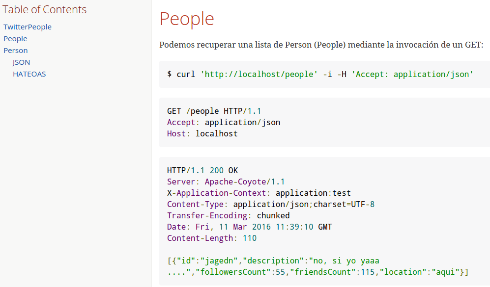
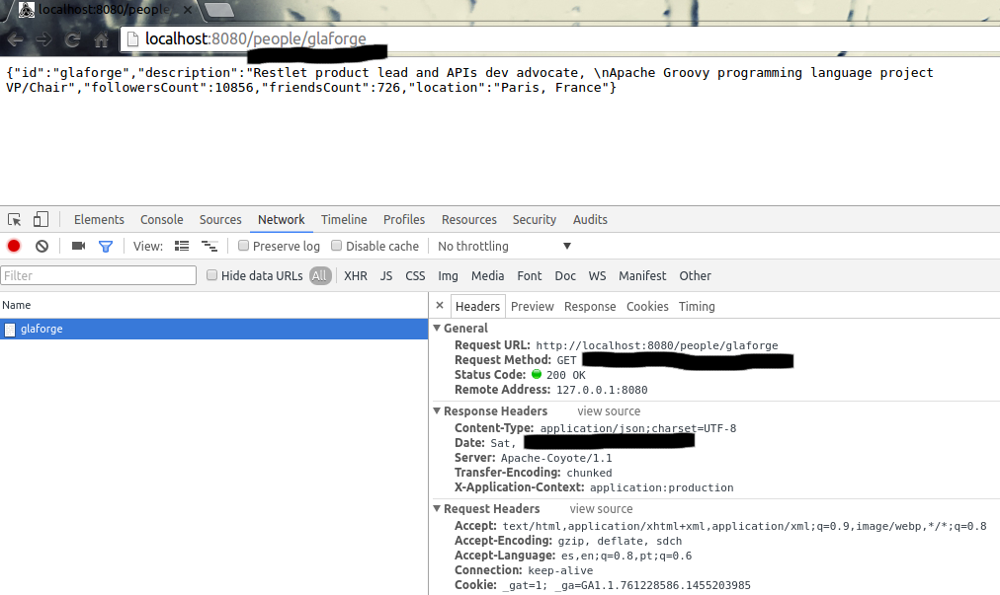

http://martinfowler.com/articles/richardsonMaturityModel.html
http://martinfowler.com/articles/richardsonMaturityModel.html
void "test user #username"(){
given:
RestBuilder rest = new RestBuilder()
when:
RestResponse response = rest.get("http://localhost:8080/people/${username}")
then:
response.status == 200
response.json.id == username
where:
username | description
'jagedn' | "nooo, si yo ya...."
'un_voluntario' | 'seguro que falla el test'
}
REST TDD&D
Test Driven Development and Documenting a Grails Rest app
o cómo usar Spock para completar tu documentación
en realidad, cómo hacer que documentas como un profesional mientras los test lo hacen por tí
Qué vamos a ver
-
Objetivo
Utilizar los test (unitarios y de integración) para que hagan el trabajo sucio de documentar nuestras APIs REST.
Si la documentación no es válida, los servicios REST NO SON VÁLIDOS
(y viceversa,claro). -
Un poco de historia
(reciente, tranquilos)
-
TwitterPeople
Grails 3.x REST application
-
Spockear
Un poco de test nunca viene mal
-
Documentando
Que es a lo que hemos venido
Objetivo
Un poco de REST-historia (personal)
o de cómo me dejé las pestañas con SOA...
que si primero el contrato vs que si primero el java
que si cabecera, que si security, que si payload, ....
y en tu radar suena REST..
y lo entiendes, y dices esto es para mí... y además Grails tiene un RestController
.. y hasta un plugin para securizar las llamadas ( @alvaro_sanchez )
...pero no todo es tan fácil, que si version del API, que si POST o PUT...
El camino al nirvana:
|
|
TwitterPeople
Proxy de usuarios de Twitter
https://github.com/jagedn/twitterpeople
Solicitamos un recurso Person a nuestro servicio y si no lo tiene lo importa desde Twitter
(Podíamos hacer la típica aplicación a base de datos, pero ...)
Person
| Path | Type | Description |
|---|---|---|
id |
String |
user name |
description |
String |
|
followersCount |
Number |
how many followers |
friendsCount |
Number |
how many friends |
location |
String |
TwitterPeople
java -jar twitterpeople-0.1.jar

Un test
/src/integration-test/groovy/twitterpeople/SimpleSpec
People recurso
/src/grails-app/domain/twitterpeople/Person
package twitterpeople
import grails.rest.Resource
@Resource(uri='/people',formats=['json','hal'],readOnly=true)
class Person {
static constraints = {
description nullable:true
location nullable:true
}
static mapping = {
id generator: 'assigned', type:'string'
}
String id
String description
int followersCount
int friendsCount
String location
}
People interceptor
/src/grails-app/controller/twitterpeople/PersonInterceptor
class PersonInterceptor {
TwitterProxyService twitterProxyService
boolean before(){
switch( params.action ){
case 'show':
twitterProxyService.createPerson(params.id)
}
true
}
}
TwitterProxyService
/src/grails-app/services/twitterpeople/TwitterProxyService
class TwitterProxyService {
Twitter twitter
Person createPerson( id ) {
Person add
User user
if( "$id".isNumber() == false ){
add=Person.get(id)
if(add){
return add
}
user = twitter.showUser("@${id}")
}else{
user = twitter.showUser( id as long)
}
if( user ){
add = new Person(user.properties)
add.id = id
if( add.validate() ) {
add.save(flush: true)
}
else{
println add.errors
}
}
add
}
}
Documentando ...
Swagger
uffff supercomplicado
JsonDoc
incorpora un playground ... pero no funciona bien en Grails
Spring-rest-doc
(http://projects.spring.io/spring-restdocs) Spring REST Docs helps you to document RESTful services. It combines hand-written documentation written with Asciidoctor and auto-generated snippets produced with Spring MVC Test.
rest-assured
(https://github.com/jayway/rest-assured) Extenso DSL orientado a testear servicios REST
Step by step ...
- Preparar entorno
- Documentación base
- PeopleSpec
- Compilar, empaquetar y ejecutar
- Vive!!!
- Visualizando la documentación in-situ
- ....Nuevas especificaciones, nuevos cambios, nueva documentación, vamos allá
Spring REST docs:
|
|
|
Rest assured DSL
get("/lotto").then().assertThat().body("lotto.lottoId", equalTo(5));
get("/lotto").then().assertThat().body("lotto.winners.winnerId", hasItems(23, 54));
given().
param("key1", "value1").
param("key2", "value2").
when().
post("/somewhere").
then().
body(containsString("OK"));
String json = get("/lotto").asString()
List<String> winnderIds = from(json).get("lotto.winners.winnerId");
Links e Info
-
@jagedn Jorge Aguilera (me)
20+ años dándole a la tecla
@pvidasoftware Puravida Software
Open source, open mind
-
Grails (http://www.grails.org)
Spock (http://spockframework.org)
spring-rest-doc (projects.spring.io/spring-restdocs)
rest-assured (https://github.com/jayway/rest-assured)
AsciiDoc (http://asciidoctor.org)
@JennStrater https://github.com/jlstrater/gr8data
Gracias
/